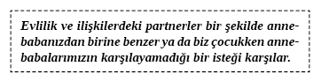
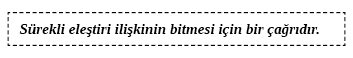

11. BÖLÜM - SEVGİ VE SAMİMİYETİN SIRLARI
Sevgi yargılamadan kabul etmektir.
ÖZEL BİR İNSANLA (veya insanlarla) İLETİŞİM varlığınızda büyük rol oynayacaktır. Bu gezegende yaşayabileceğiniz en mükemmel deneyim romantik bir ilişki yaşamaktır.
Birine âşık olduğunuzda deneyimin kalitesi açısından nadiren tutturulabilen bir mutluluk yaşarsınız. Birine âşık olduğunuzda o insanın hatalarını ve olumsuz davranışlarını göremez hale gelirsiniz. Bu, ilişkinin nasıl geliştiği ve ilerlediğine bağlı şekilde iyi ya da kötü olabilir. Koşulsuz sevgi yargılamadan kabul etmektir. Bu hem bir gerçeklik hem de bir hedeftir. Fiziksel olarak ortaya çıkması güç ruhsal bir kavramdır. İlişkiniz ilerledikçe sevgilinizin sessiz kaldığı problemler su yüzüne çıkacak, sonunda ilişkiniz için çabalamaya gerek olmadığını fark edeceksiniz. Sevgi bağının derinleşmesini sağlayan şey, diğer insanın hataları ve sorunları ortaya çıkınca bütün bunlara rağmen bize karşı sürekli sevgisi için o insanı hâlâ sevmemizdir. Uzun soluklu, kalıcı aşk muhteşem bir şey. Peki, bu uzun süreli ilişki değerlendirme eksikliğinden veya kabullenmekten kaynaklanıyor olabilir mi?
Bu bölümde en baştan başlayalım. Şu an evli değilseniz veya ‘evliliğin konusu açılmıyorsa’ ve evlenmeyi, hakkınızda konuşulmasını istiyorsanız şimdi bu isteği nasıl gerçekleştireceğinizi öğreneceksiniz. Başarılı ilişkilerin nasıl başlamasının çok basit yöntemini öğreneceksiniz. Evli değilseniz ve sizden hoşlanan birileri yoksa bu bölüm, şu anki ilişkinizdeki güçlükleri mutlu ve tatmin edici bir ilişkinin temellerine dönüştürmenize yardımcı edecek.
Ne Arıyorsunuz?
‘İyi’ bir ilişkisi olanlar bir zamanlar ilişkide ‘ne aradıklarını’ biliyorlardı. Bu bilinçli veya bilinçsiz olabilir. Kriterler fiziksel, duygusal, zihinsel ya da ruhsal olabilir (ya da bu dördünün kombinasyonu) ama biliyorlardı. Ne tür birini bulmak istediklerini biliyorlardı. Bazı durumlarda tam olarak hangi insanla ilerlemek istediklerini biliyorlardı.
Bir sevgili arayışına başladıklarında çoğu insan ‘etrafa’ bakıp birini bulmayı umar ve hayallerindeki kişinin neden orada olmadığını merak eder. Bu hemen aşılamayan bir problemdir. Biri arandığında bu hiç kimseyi aramamakla aynı etkiye sahiptir. Hiçbir çekicilik hissi uyanmaz. Fiziksel, duygusal, zihinsel ya da ruhsal olsun ‘belirli’ özellikler arandığında ise insanları arayana doğru çeken manyetik benzeri bir filtre ortaya çıkar. Başka şekilde anlatmak gerekirse trafiğin sıkışık olduğu saatte bir sonraki alacağınız ‘doğru arabayı’ bulmayı umarak yola çıkarsanız hiçbir şey görmezsiniz. Ancak belirli bir arabayı aramaya karar verirseniz ondan bir sürü görürsünüz. Bu, bir araba aldıktan sonra yolda ondan çok sayıda görmemize benzer. Buradaki şey beyninizin yeni aracınızı kendisi için önemli olarak tanımasıdır. Böylece belirlemede bulunursunuz.
Aynı zihinsel süreç ilişkilerimizde yatırım yapmak istediğimiz insanları tanıma sürecinde bize yardım eder. Ne yazık ki birçok kişi ilişki kurmak istedikleri bireylerin temel özelliklerini belirlemez. Biri ilişki kurmak istediklerinin özelliklerini belirlerse içsel süreci bu kriterlere uymayan insanları saf dışı bırakacak ve uygun/olası partnerleri seçecektir.
‘Arama’ aşamasındaysanız (ve hepimiz çoğu zaman bir çeşit ilişki ararız) o zaman nasıl (bir) insan(lar) arıyorsunuz? Büyümemizi sağlayacak ilişkilere dâhil olmamız gerekir. Bu bizimle bazı benzerlikleri ve bazı önemli farklılıkları olan insanlarla bağ kurmamız gerektiği anlamına gelir. İnsanların birbirlerini tamamlamaları da gerekir.
Bazı insanlar para konusunda iyidir. Bazıları değildir. Bir ilişkide para konusunu iyi kotaramayan iki insan eğer çözüm bulunmazsa başarısızlık tarifi olabilir. Birçok insan ağlayan çocuğun sesine katlanamaz. Bazıları ise bunu çocukların yaptığı basit bir gürültü olarak görür. Ağlayan çocuk sesine katlanamayan iki insan evlenirse ne olur?
Doğru insanı kendi alanımıza nasıl çekeriz? İstediğimiz ve ihtiyaç duyduğumuz insanları kitlelerden nasıl seçeriz? Hangi ihtiyaçların karşılanması gerektiğine ve başkalarına neler sunabileceğimize dair biraz bilgimiz olmalıdır. Birçok insan başkalarında aradıkları özellikleri düşünmemişlerdir. Belirli özellikler, davranışlar ve kişilikler arayanlar aradıklarını bulmaya eğilimlidirler. Bunun için beyninizin mucizevi yapısı ve işleyişine teşekkür edebilirsiniz.
Alıştırma: Eş arama sürecindeyseniz o insanda arayacağınız fiziksel, duygusal, zihinsel ve ruhsal özellikleri yazın. Aklınıza gelen her şeyi eklediğinizden emin olun. Partnerinizin çok para kazanması gerekiyorsa veya ilişkinin peşinden koşmak istemiyorsanız bunu da yazın. Yazılmaması gereken özellik yoktur.
Belirli bir insanda ne aradığınızı bütün düzeylerde ciddiyetle değerlendirmek kriterlerinize uymayan insanları beyninizin elemeye başlamasını sağlıyor. Bu beyninizin çok önemli bir işlevidir çünkü olası hayat arkadaşlarını keşfetmeyi kolaylaştırır. Beyniniz kimi aradığınızı biliyor ve şimdi sizin için bu işi üstlenecek.
Bütün ilişkilerde bir nevi verme ve alma hissi vardır. Her insan tarafından bilinçsiz olarak değerlendirilen yazılmamış bir ‘ilişkiye katkılar tablosu’ vardır. İki insan da ilişkiye adil ve eşit olarak katkıda bulunuyorsa ilişki genellikle mutlu ve huzurludur. Bir insan diğerine kıyasla çok daha fazla katkıda bulunuyorsa ilişki muhtemelen bitecek veya çok mutsuz olacaktır.
Alıştırma: Olası partnerinizde görmek istediğiniz karakteri ve özellikleri kaydettiniz. Şimdi ışık size çevrildi. Diğer insan için ilişkiye ne getiriyorsunuz?
Bir insan sizden hangi faydaları, deneyimleri ve varlıkları kazanacak?
Fiziksel, duygusal, zihinsel ve ruhsal güçleriniz olarak neleri görüyorsunuz? Gelecekteki ilişkiye sunacağınız bütün özellikleri yazın.
Alıştırma: Şimdi asıl zor kısım geldi. İlişkiye getirdiğiniz, önceden beri mevcut problemler nelerdir? (Borcunuz mu var? Bu insanın dini inancına mensup değil misiniz? Obez misiniz? Sağlıksız mısınız? İstikrarsız bir kariyeriniz mi var? Yoksa hiç birikiminiz mi yok?) Eksik olduğunuz bütün alanları yazın. Kendiniz hakkında mümkün mertebe açık ve dürüst olun.
Alıştırma: Eksiklik olarak listelediğiniz her unsuru bir kez daha yazın ve sonra bunu gidermek için ne yapacağınızı yazın. Değiştirmek mümkün değilse o eksikliğin yanına gerçekleri yazın.
Alıştırma: Kendinize dürüst ve şeffaf bir şekilde baktığınıza göre ilginizi bir kez daha ilk alıştırmadaki partner tarifinize çevirin. Belirttiklerinizin bazıları istedikleriniz, bazıları da ‘zorunda’ olanlardır. Bu alıştırmada şu soruya cevap vermek zorundasınız: “Bu insan ____________ dışında istediğim her şeye sahipse bu insanla mutlu olur muyum?” Buna yukarıdaki ilk alıştırmada belirttiğiniz her özelliğe göre cevap verin. HAYIR cevabı vereceğiniz her özelliği yuvarlak içine alın. Bunlar sizin KESİNLİKLE SAHİP OLUNMASI GEREKEN cevaplarınız.
Tabii bu KESİN cevaplar hayatınızı paylaşmak istediğiniz insanları sınırlandırmaya başlıyor. Bu yüzden kendinize karşı dürüst ve doğru olmalısınız. Yakışıklı, zengin ya da yüksek öğrenim derecesi olan birini istemek sığ bir davranış değildir. Kendiniz için cevap vermek isteyeceğiniz asıl sorun, istediğinizin gerçekten KESİNLİKLE SAHİP OLUNMASI gereken bir şey olup olmadığıdır? Biri geçmişinde cinsel istismara uğramışsa veya intihara kalkışmışsa belki yukarıdaki özellikler KESİNLİKLE SAHİP OLUNMASI gereken özellikler değildir.
Şimdi bir aşk ilişkisinde gerçekten ne istediğinizi dikkatlice keşfettiniz. Beyniniz olası adayları gözden geçirecek. Aynı şekilde siz de diğerleri tarafından değerlendirileceksiniz. Bu anlaşılması ve takdir edilmesi çok önemli bir süreçtir. Birinin hayat planlarına uyduğumuz veya uymadığımız gerçeğini ‘kişisel olarak’ algılamamalıyız. Bu süreç çoğu insanın belli bir düzeyde (bilinçsiz veya bilinçsiz ve nadiren de ruhsal düzey) geçtiği bir süreçtir. İki olası hayat ortağı karşılaştıktan kısa süre sonra yapbozun iki parçası oturur. Bu durum ‘aradığım kişi’ cevabıdır. Bu insan gerçekten birçok insandan biri olabilir ama yapbozun parçalarının oturduğunu hissettiğinizde bu deneyim genellikle ‘ilk görüşte aşk’ demektir.
Samimiyet: Derin Sevgi Bağları Oluşturmak ve Onları Yeniden Canlandırmak
Genellikle cinselliğimizi paylaştığımız insanlar duygusal açıdan en samimi olduklarımızdır ama samimiyet seksle karıştırılmamalıdır. Biriyle samimiyet kurmak, ona karşı tamamen açık ve dürüst olmaktır. Sizin kendiniz ve diğer insanın da kendisi olduğu anlamına gelir. Samimi anlarda çok az gizli konu ve sır vardır. Bu kitabın amacı olduğu için yalnızca romantik ilişkilerde ve evliliklerde ortaya çıkan samimiyetten bahsedeceğiz.
Evliyseniz ‘evlilik bağı’ bir hapishane ya da özel bir tür ‘birlik’ gibi gelebilir. İncil iki insanın birliği fikrini zikretmektedir. Bu bölümün sonucunda bu bağı gözden geçirmiş olacağız.
Evliliklerin yarısı boşanmayla biter. Geriye kalan evliliklerin yarısında ise insanlar mutsuzdur. Başarılı olan evliliklerin bazı ortak özellikleri vardır; bunlardan biri de iyi iletişimdir. Bu, katılanların görece açık bir şekilde hislerini ifade edebilmesi anlamına gelir. Bu hiçbir kavga veya tartışma yaşanmayacağı anlamına gelmez. Aksine şikâyet etme, kavga etme ve tartışma evliliklerin en iyilerinde gerçekleşecektir. Şikâyet etme, kavga etme ve tartışma aslında potansiyel iyi evliliklerin belirtileridir. Bu insanlar iletişim kuruyorlar. İletişim de daha derin ve samimi bir ilişkinin temel gerekliliğidir.
Neredeyse bütün evlilikler ve samimi ilişkiler, üzerinde ‘çalışılmayı’ gerektirir. Asıl sorun, ilişki üzerinde nasıl çalışabileceğinizdir. Bu cümleyi kâğıt üzerinde okuduğunuzda çok elle tutulamayacak gibi görünebilir ama gerçek hayatta bu üzerinde çalışılabilir bir süreçtir ve iletişimle başlayıp iletişimle biter.

Aşağıdaki alıştırmalar kendinizle ilgili bazı ilginç sırları keşfetmenizi sağlayacak. Aşağıdakilere cevap verirken istediğiniz kadar zaman kullanabilirsiniz.
1. Babanızla ilgili en çok hayranlık duyduğunuz ve sevdiğiniz şeyleri yazın.
2. Babanızın yaptığı veya söylediği sizi inciten veya canınızı acıtan şeyleri yazın.
3. Annenizle ilgili en çok hayranlık duyduğunuz ve sevdiğiniz şeyleri yazın.
4. Annenizin yaptığı veya söylediği sizi inciten veya canınızı acıtan şeyleri yazın.
5. Şu anki partnerinizde anne-babanızda da bulduğunuz hangi hayranlık, sevgi, kırgınlık ve acı unsurlarını buluyorsunuz?
Doktor Harville Haddix, genellikle bilinçaltı bir düzeyde anne-babamızın bıraktığı boşluğu dolduracak biriyle evlendiğimizi keşfetmiştir. Başka bir deyişle bazen çocukluğumuzu tamamlamak için ebeveynlerimizden birine benzer biriyle evleniyoruz. Bu elbette bilinçli bir davranış değil. Bilinçsiz zihnimiz ihtiyacı olanı çeken bir mıknatıs gibidir. Hayatın bu önemli açısında bilinçsiz zihin çocukluğunu tamamlamak için nasıl bir insan gerekirse onu ister.
Üzerinde düşünerek bir partnerde aradığınız özellikleri ve karakteri belirlediniz. Bu bilinçli bir alıştırmaydı. İlişkiniz varsa bunu çocukluğunuzu tamamlamak için başlatıp başlatmadığınızı, evlenip evlenmediğinizi belirlemek adına şu soruya cevap verin:
Partnerinizi ilk seçtiğinizde bu ona karşı romantik bir çekimden mi kaynaklanır?
Cevap “Hayır” ise muhtemelen çocukluğunuzu tamamlamaya yönelik bilinçsiz bir ihtiyacı yerine getirmek için evlenmediniz. “Evet” yanıtını verdiyseniz bunu yapmış olabilirsiniz. (Hiçbir cevap sonunda başarılı veya başarısız bir evliliği göstermez. Ancak ilişkilere nasıl ve neden başladığımızın bilincinde olmak önemlidir.)
Amaçlarımız uğruna “Evet” dediğimizi farz edelim. “Hayır” dediyseniz aşağıdaki ‘Başarılı İlişki Tanımlama’ kısmına geçin.
Kısmen çocukluğunuzu tamamlamak için evlendiğinizden muhtemelen partnerinizin sizi tamamlaması gereken ve bir bütün olmanızı sağlayan birçok özelliği bulunduğunu tahmin edebilirsiniz.
Bir anlığına partnerinizi düşünün ve zayıf noktalarınızda güçlü olup olmadığına bakın. Partneriniz de sizin güçlü noktalarınızda zayıf olabilir. Bu işlevsel olmayan bir ilişki anlamına gelmez. Bu hayat boyu mutluluk ve başarının tarifi olabilir ya da tam aksi bir duruma işaret edebilir. Evliliğiniz artık istediğiniz gibi mutlu gitmediğinde aradaki farklılıklar bilinçli şekilde harekete geçme çağrısı anlamına gelebilir. Partnerler genellikle “Neden onunla evlendim? Onda ne gördüm ki? Nasıl bu kadar aptal olabildim?” gibi sorular sorar.
Gelen problemleri engellemenin zamanı ŞİMDİDİR. Evliliklerdeki sorunlar dışarıdan bakanlar için küçük olarak görülürler. Ancak sizin için bazen kaos yaratabilir. Küçük şeyler büyük kavgaların fitilini ateşleyebilir. Bunlar daha önceden bahsettiğimiz tamamlanmamış çocukluğun belirtileridir. Neden mi? Çünkü partneriniz, çocukken ebeveynlerinizle yaşadığınız tartışmaları ve cezaları tetikler. Partnerinize bağırırken aslında ailenize bağırıyorsunuzdur.
Daha iyi bir ilişki için verebileceğimiz en iyi söz şudur: Eleştirmeye son verip partnerimi dinlemeye başlayacağıma söz veriyorum. Eleştiri, bu güne kadar süregelen yaralarınızı oluşturan, ailenizin size yaptığı bir şeydir. Bu anne ve babanızın sizi sevmediği anlamına gelmez. Muhtemelen sevdiler ve sadece hislerinize, ihtiyaçlarınıza karşı duyarsızdılar. Bu bağlamda ebeveynin neden sizi eleştirdiği veya incittiğini anlamak değil eleştirinin ilişkiyi mahveden bir unsur olduğunun farkına varmak önemlidir. Eleştiri, açılan yaraya tuz basmak gibidir ve sevgi bağını mahveder.

Bilinçsiz olarak çocukluklarını tamamlamaya çalışan partnerler tartışmaya, kavga etmeye ve çok fazla söylenmeye eğilimlidirler. Siz çocukken anne-babanızla böyle şeyler yaşadığınız için bunun olması normaldir. Yarım kalmış çocukluğun başka bir göstergesi olarak acı beklediğinizden daha da derindir.
Mutlu İlişkilerin Matematiği
Çocukluklarını tamamlayan partnerler artık bunu zihinlerinde yeni bir farkındalıkla gerçekleştirebilirler. Aşkta daha derine inebilir ve bazen de yeniden daha derinden âşık olabilirler. Bu özel insanın size tekrar âşık olmasını sağlamanın yolu çok kolay. Birbirinizle yaşadığınız olumlu deneyimleri artırın. Kolay görünüyor ama Dr. John Gottman’a göre ilişkiniz gerçekten mutluysa ve uzun süreliyse her bir olumsuz ana karşı beş olumlu anınız olmalıdır. Why Marriages Succeed or Fail? adlı bu mükemmel kitapta Dr. Gottman, olumsuz zamanların da hayatın parçası olduğunu ama olumluların olumsuzların önüne geçmesi gerektiğini belirtmektedir. Bu, Gottman’ın evlilikte başarısının anahtarlarından biridir. Şimdi partnerinizle nasıl beş kat fazla olumlu deneyim yaşayacağınızı düşünmeye başlayacaksınız.
Düşmanlığın Farkında Olun
Birine zarar vermek amacıyla sözlü saldırıda bulunmak düşmanlıktır. Bazı insanlar çok öfkelenip başkalarını eleştirirler. Daha önce bahsedildiği gibi buna son verilmesi gerekir. Bazıları partnerlerinin davranışlarından şikâyet ederler. Bu uzun vadede kötü değildir fakat mutluluğun reçetesi de değildir. Ruhumuza zarar veren en kötü günahlardan biri genelde veya özelde zarar verme niyetiyle iletişim kurmaktır.
Zarar verme amacıyla iletişim kuruyorsanız buna hemen son vermelisiniz. Düşmanlık hiçbir insanın yapmaması gereken bir şeydir ve bunun kimseye faydası yoktur. İletişim aracılığıyla başkalarına zarar vermek bir an önce düzeltilmesi gereken ciddi ilişki sorunlarının işaretidir.
Partneriniz sizinle bilerek düşmanca iletişim kuruyorsa bu bilgiyi makul bir anda onunla paylaşmalısınız. Partneriniz bu düşmanlığın sebebinden bahsedebilir ve sonra da çözüme gidebilirsiniz. Çözüm sessiz kalmak değil aksine daha çok iletişim kurmaktır. Yine de bu düşmanlık sorununu ele alırken geçmişteki bütün sorunları gündeme getirmeyin. Bu sadece hedefinizin tam tersine ulaşmanıza neden olur.
Nasıl bir iletişim modeli önerirsiniz? Partnerinize bunu önerin. Şartlar uygunsa anlaşma sağlayın ve iyi hissetmek amacıyla iletişim kurun. Gelecek sayfalardaki alıştırmalar kötü durumdaki bir ilişkiyi yeniden kurmanıza yardım edecek.
İlişkilerde Aşkı Canlandırmak
Evlilik bitecek mi yoksa aşk yeniden canlandırılacak mı? Başlama zamanı geldiyse şimdi başlayın. İlişkinizi yeniden canlandırmaya yönelik aşağıdaki planın size büyük yardımı olacak. Şu şekilde:
1) Sizin ve partnerinizin güvenli iletişim kurabileceği bir ortam yaratın.
Partnerinize, eşinize vuruyorsanız bu davranışınızı değiştirin. Duygularınız sonra değişecek ama davranışınızı şimdi değiştirin. Eşinize küçükken vurulmuş olabilir. Sevdiğiniz kişiye karşı öfke patlamasına eğilimliyseniz buna hemen son verin. Ona muhtemelen küçükken bağırıldı. Sinirlenince kalkıp gidiyorsanız buna hemen son verin. Belki eşiniz çocukken terk edildi ve siz aynen onun ebeveynlerinden biri gibi davranıyorsunuz. İkinci maddeye geçmeden önce bu örnekleri dikkatlice düşünün. Konuşmanın ve iletişim kurmanın güvenli olduğu bir ortam yaratın. Eşinize bunun yargılama, dinleme ya da parmakla gösterme değil değerlendirme zamanı olduğuna dair söz verin.
2) İletişim kuracağınız güvenli ortamı oluşturmak için bugün evliliğinizde uygulayabileceğiniz üç şeyi tanımlayın.
3) Her türlü eleştiriye hemen son verin.
Çocukluğunu tamamlamaya çalışan bilinçsiz bir zihne yönelik yapıcı eleştiri diye bir şey söz konusu olamaz.
4) Kabul etmeyi iyileştiren seanslar oluşturun.
Nasıl bir kaza geçirdiğinizde iyileştirme seanslarına katılıyorsanız siz ve partneriniz de aynı şekilde oturup konuşmalısınız. Karşınızdaki kişinin iyi olup olmadığını öğrenip onun için ne yapacağınızı görmek istersiniz. Partnerinize, söyleyeceklerinizi müdahale etmeden veya açıklama yapmadan kabul etmesini istediğinizi söylemeniz gerekir. Savunmaya geçmek gereksizdir. Ona sadece yaralı olduğunuzu ve canınızın acıdığını söylersiniz. Onu suçlamazsınız. “... hissediyorum” ve “Acı çekiyorum...” gibi ifadeler kullanırsınız. O da “Anlıyorum”, “Bana başka ne söylemek istiyorsun?”, “Devam et” ya da “Tamam” demeli. Bu dört ifade ve soru, yara almamış partnerin söylemesi gerekenlerin toplamıdır.
Bu, ‘iyileştirme’ seanslarında partnerinize asla saldırmamalısınız. Açık ve sevecen olursanız ilişkiniz geleceğe doğru sağlam adımlarla yol alır.
5) Partnerinize plansızca kibarlıklar yapın.
İşten eve gelirken bir kart veya hediye getirin. Küçük ve pahalı olmayan bir hediye düşünceliliğinizi gösterir ve ilişkinizde mükemmellik yaratabilir. Burada anahtar kelimenin ‘plansız’ olduğuna dikkat edin. Bu ‘tahmin edilemez’ anlamına gelir. Evde normalde yapmadığınız bir şey yapın. Örneğin, asla bulaşık yıkamazsanız bir geceliğine yıkayın. Çimleri hiçbir zaman biçmezseniz bu kez biçin. Beklenmeyen hareketler çok hoş olabilir, takdir edilebilir.
6) Dışarı çıkınca yapmaktan hoşlandığınız bir şeyi yapmaya geri dönün.
Dışarı çıktığınızda yaptığınız özel bir şey var mı? Varsa şimdi yapın.
7) Partnerinize olan sevginiz ve hislerinizi sarılarak, öpücüklerle, sözlü sevgi sözcükleriyle ifade edin ve bunu sık sık yapın.
Çoğu insan başkalarının kendisine sarılmasına ve öpülmeye ihtiyaç duyar. Leo Buscaglia, bir ilişkinin sürdürülmesi için günde en az bir düzine öpücüğü şart koşardı. “Seni seviyorum” demek 30.000 tekrardan sonra eskiyebilir ama kimse partnerinin kendisini sevdiğini çok sık söylediği için şikâyet etmez.
8) Sizin olanları paylaşırken ihtiyaçlarınızı ve isteklerinizi keşfedin.
Mükemmel bir ilişki için partnerinizin şu an ilişkide neden memnun olduğunu keşfedin. Sonra da ilişkinizi neyin geliştirebileceğini düşündüğünü sorun. Partnerinize aşağıdaki ‘Başarılı İlişki Tanımlama’ alıştırmasındaki soruları sorun. (Bunların hepsini tek oturuşta yapmayın.) Bu alıştırma partneriniz için neyin önemli olduğunu keşfetmenize ve ilişkinizi değiştirmenize yardımcı olacak.
Başarılı İlişki Tanımlama
Aşağıdaki sorular siz ve partneriniz için birbiriniz hakkında daha çok şey öğrenmek ve aranızdaki bağı derinleştirmek için araç olarak kullanılacak. Bu soruları nazik bir şekilde birbirinizle ilgili bir şeyler öğrenmek için kullanın. İlk sorular size ve partnerinize zor zamanlarınızda başvuracağınız kaynakları oluşturmanıza yardım edecek. Sonraki sorular zayıflıklarınızı ve değiştirip geliştirebileceğiniz alanları keşfetmenizi sağlayacak. Her biriniz bu sorulara birkaç gün boyunca yirmi dakika ayırın.
İlişkinizde en çok neyi seviyorsunuz?
İlişkinizdeki diğer en iyi şey nedir?
İlişkinizde ondan sonraki diğer en iyi şey nedir?
Başka?
İlişkimizi geliştirmek için benimle ilgili daha ne öğrenmen gerektiğine inanıyorsun?
İlişkimizi geliştirmek için seninle ilgili daha ne öğrenmem gerektiğine inanıyorsun?
Seni sinir eden iki şey nedir?
Senin yaptığın ve beni sinir eden iki şey nedir?
Cinsel hayatımızla ilgili ne kadar mutlusun?
Cinsel hayatımızı daha etkileyici hale getirmek için ne yapabilirim?
Cinsel hayatımızı daha etkileyici hale getirmek için ne yapmak istersin?
Artık tartıştığımızda, bu durum kontrolden çıkmadan önce öpüşüp barışalım mı?
Bunu yapmak için ‘özel kelimemiz’ ne olsun?
Evde benim onaylamadığım neleri yaptığını düşünüyorsun?
İşte benim onaylamadığım neleri yaptığını düşünüyorsun?
Onaylamadığın ne yapıyorum?
Geçmişimle ilgili sana anlatmadığım neyi bilmek istersin?
Geçmişinle ilgili bana söylemediğin neyi bilmemi istersin?
Ne zaman kıskançlık yapabilirim?
Ne zaman kıskançlık yapabilirsin?
İyi ilişkiden muhteşem ilişkiye doğru nasıl ilerleyebiliriz?
Bütün bu sorular partnerimizle ilgili yıllar boyunca keşfettiğimizden daha fazlasını bize birkaç saat içinde sağlar. Sorular, kültürümüzde iletişimin az kullanılan bir unsurudur. Nazik sorular sormak iletişiminizi geliştirmenizi ve ilişkiniz ne kadar iyi de olsa onu geliştirmenizi sağlar. Partneriniz için neyin önemli olduğunu öğrenmek ve partnerinizin de sizin neye ihtiyacınız olduğunu anlamasını sağlamak iyi bir ilişkiye sahip olmayı kolaylaştıran şeylerdir. Karşınızdaki insanı sizinleyken daha huzurlu hissettiren şeyi tahmin etmeye çalışın.
Partnerinize hangi soruları sormak istersiniz?
İlişkideki Sorunları Çözme Stratejisi
İlişkiler bazen kötüye gidebilir ve nedenini anlamak olabilir. İlişkinizde başarı için ne gerektiğini öğrenmenize rağmen bir tartışma çözümsüz kalabilir. Böyle bir durumda ‘üçgen’ olarak bilinen bir şeyi ararız.
Üçgen ilişki, taraflardan biri üzerinde olumsuz etki yaratacak üçüncü kişinin olaya dâhil olmasıdır. Bu insan çoğunlukla ara bozucudur. Üçüncü kişi, bir tarafın ‘arkadaşıdır’ ve bazen bu arkadaş ilişkiye verdiği zararın farkına varmaz. Ara bozucu, kendi ilişkisinde başarısızlık yaşamış olabilir ve şimdi de kendini tavsiye vermeye adamıştır. Bu insan ilişkiniz için çok zararlı olabilir ve 12. Bölüm’deki ‘İyi Niyetli Ejderhalarla Konuşmak’ kısmında belirtildiği şekilde ele alınabilir.
İyi Niyetli Ejderhalar’ın kim olduğunu keşfetmek için partnerinizle oturup, “Tartışmamıza kim neden oluyor?” diye sormalısınız. Bunu bulmak uzun boylu düşünmeyi gerektirebilir. Ara bozucu olarak iki insan ortaya çıkarsa iki adet üçgen var demektir. Olumsuz düşünceleri ve kaynaklarını keşfettiğinizde harekete geçebilirsiniz. Bu insanla iletişiminizi kesmek muhtemelen gereksizdir ama iletişimin içeriğini değiştirmek muhtemelen gereklidir.